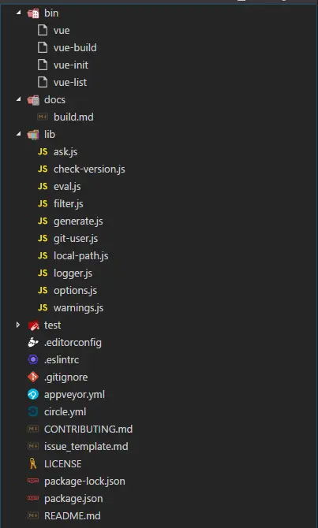

走进 Vue-cli 源码，自己动手搭建前端脚手架工具

12018.08.10 11:25:26 字数 3,544 阅读 6,067
前言
前段时间看了一些 vue-cli 的源码，收获颇深。本想找个时间更新一篇文章，但是最近事情比较多，没有时间去整理这些东西。趁这两天闲了下来，便整理了一下，然后跟大家分享一下。如果小伙伴们读完之后，跟我一样收获很多的话，还望各位小伙伴们多多点赞收藏支持一下哦。
Vue-cli 介绍
Vue-cli 是一款非常优秀的用于迅速构建基于 Vue 的 Web 应用工具。他不同于 creat-react-app 这样的工具，开发者只需要关注项目逻辑的代码，而不需要关心 webpack 打包、启动 Node 服务等等诸如此类的这些问题。Vue-cli 是一款基于模板化的开发工具，等于就是把别人的项目结构给照搬过来，所有的配置都是暴露出来的，你可以根据实际情况去做一些配置的修改，更加灵活自由一点。当然这对前端工程师提出更高的要求，考虑的东西也变多了。不过 Vue-cli 即将发布 3.0 的版本，整个 Vue-cli 发生了翻天覆地的变化，它采用跟 creat-react-app 这类工具的模式，开发者只需要关注项目逻辑的代码即可。不过目前 3.0 还没有出来，所以这次源码分析我采用的 v2.9.3 的源码，也就是 2.0 的代码。后面小伙们在阅读的时候要注意以下。
Vue-cli 项目结构

image
整个项目的目录结构如上图所示，下面我大概介绍每个文件夹的东西大致都是干嘛的。
- bin （这里放的 vue 的一些命令文件，比如vue init这样的命令都是从由这里控制的。）
- docs （一些注意事项啥的，不重要的目录，可以直接忽略。）
- lib （这里存放着一些 vue-cli 需要的一些自定义方法。）
- node_modules （这里应该就不用我多说了，相信大家都知道了，不知道的话可以去面壁去了！●-● ）
- test （单元测试 开发 vue-cli 工具时会用到，我们读源码的时候可以直接忽略掉。）
- 一些杂七杂八的东西 （比如 eslint 配置、.gitignore、LICENSE 等等诸如此类这些东西，不影响我们阅读源码，可以直接忽略掉。）
- package.json/README.md （这个不知道也可以去面壁了！●-●）
综合来说，我们阅读源码所要关注的只有 bin 和 lib 下面即可，其他的都可忽略。下面开始阅读之旅吧
Vue-cli 源码阅读之旅
在开始读源码之前，首先我要介绍一个工具（commander），这是用来处理命令行的工具。具体的使用方法可查看 github 的 README.md https://github.com/tj/commander.js 。小伙伴们再阅读后面的内容之前，建议先去了解一下commander，方便后续的理解。这里我们对commander就不做详细介绍了。这里 vue-cli 采用了commander的 git 风格的写法。vue 文件处理 vue 命令，vue-init 处理 vue init 命令以此类推。接着我们一个一个命令看过去。
vue
引入的包：
- commander （用于处理命令行。）
作用： vue 这个文件代码很少，我就直接贴出来了。
#!/usr/bin/env node
require('commander')
.version(require('../package').version)
.usage('<command> [options]')
.command('init', 'generate a new project from a template')
.command('list', 'list available official templates')
.command('build', 'prototype a new project')
.parse(process.argv)这个文件主要是在用户输入 “vue” 时，终端上显示参数的使用说明。具体的写法可参考 https://github.com/tj/commander.js 上面的说明。
vue build
引入的包：
- chalk （用于高亮终端打印出来的信息。）
作用： vue build命令在 vue-cli 之中已经删除了，源码上做了一定的说明。代码不多，我就直接贴出来。
const chalk = require('chalk')
console.log(chalk.yellow(
'\n' +
' We are slimming down vue-cli to optimize the initial installation by ' +
'removing the \`vue build\` command.\n' +
' Check out Poi (https://github.com/egoist/poi) which offers the same functionality!' +
'\n'
))vue list
#!/usr/bin/env node
const logger = require('../lib/logger')
const request = require('request')
const chalk = require('chalk')
/**
* Padding.
*/
console.log()
process.on('exit', () => {
console.log()
})
/**
* List repos.
*/
request({
url: 'https://api.github.com/users/vuejs-templates/repos',
headers: {
'User-Agent': 'vue-cli'
}
}, (err, res, body) => {
if (err) logger.fatal(err)
const requestBody = JSON.parse(body)
if (Array.isArray(requestBody)) {
console.log(' Available official templates:')
console.log()
requestBody.forEach(repo => {
console.log(
' ' + chalk.yellow('★') +
' ' + chalk.blue(repo.name) +
' - ' + repo.description)
})
} else {
console.error(requestBody.message)
}
})引入的包：
- request （发送 http 请求的工具。）
- chalk （用于高亮 console.log 打印出来的信息。）
- logger （自定义工具 - 用于日志打印。）
作用： 当输入 “vue list” 时（我们测试时，可以直接在当前源码文件目录下的终端上输入 “bin/vue-list”），vue-cli 会请求接口，获取官方模板的信息，然后做了一定处理，在终端上显示出来模板名称和对应的说明。
效果如下：
Available official templates:
★ browserify - A full-featured Browserify + vueify setup with hot-reload, linting & unit testing.
★ browserify-simple - A simple Browserify + vueify setup for quick prototyping.
★ pwa - PWA template for vue-cli based on the webpack template
★ simple - The simplest possible Vue setup in a single HTML file
★ webpack - A full-featured Webpack + vue-loader setup with hot reload, linting, testing & css extraction.
★ webpack-simple - A simple Webpack + vue-loader setup for quick prototyping.vue init
“vue init” 是用来构建项目的命令，也是 vue-cli 的核心文件，上面的三个都是非常简单的命令，算是我们阅读源码的开胃菜，真正的大餐在这里。
工作流程
在讲代码之前，首先我们要讲一下整个 vue-cli 初始项目的流程，然后我们沿着流程一步一步走下去。
整个vue init大致流程如我上图所示，应该还是比较好理解的。这里我大致阐述一下大致的流程。
- vue-cli 会先判断你的模板在远程 github 仓库上还是在你的本地某个文件里面，若是本地文件夹则会立即跳到第 3 步，反之则走第 2 步。
- 第 2 步会判断是否为官方模板，官方模板则会从官方 github 仓库中下载模板到本地的默认仓库下，即根目录下.vue-templates 文件夹下。
- 第 3 步则读取模板目录下 meta.js 或者 meta.json 文件，根据里面的内容会询问开发者，根据开发者的回答，确定一些修改。
- 根据模板内容以及开发者的回答，渲染出项目结构并生成到指定目录。
源码内容
这里vue-init文件的代码比较多，我这里就拆分几块来看。首先我先把整个文件的结构列出来，方便后续的阅读。
/**
* 引入一大堆包
*/
const program = require('commander')
...
/**
* 配置commander的使用方法
*/
program
.usage('<template-name> [project-name]')
.option('-c, --clone', 'use git clone')
.option('--offline', 'use cached template')
/**
* 定义commander的help方法
*/
program.on('--help', () => {
console.log(' Examples:')
console.log()
console.log(chalk.gray(' # create a new project with an official template'))
console.log(' $ vue init webpack my-project')
console.log()
console.log(chalk.gray(' # create a new project straight from a github template'))
console.log(' $ vue init username/repo my-project')
console.log()
})
function help () {
program.parse(process.argv)
if (program.args.length < 1) return program.help() //如果没有输入参数，终端显示帮助
}
help()
/**
* 定义一大堆变量
*/
let template = program.args[0]
...
/**
* 判断是否输入项目名 是 - 直接执行run函数 否- 询问开发者是否在当前目录下生成项目，开发者回答“是” 也执行run函数 否则不执行run函数
*/
/**
* 定义主函数 run
*/
function run (){
...
}
/**
* 定义下载模板并生产项目的函数 downloadAndGenerate
*/
function downloadAndGenerate(){
...
}整个文件大致的东西入上面所示，后面我们将一块一块内容来看。
引入的一堆包
const download = require('download-git-repo') //用于下载远程仓库至本地 支持GitHub、GitLab、Bitbucket
const program = require('commander') //命令行处理工具
const exists = require('fs').existsSync //node自带的fs模块下的existsSync方法，用于检测路径是否存在。（会阻塞）
const path = require('path') //node自带的path模块，用于拼接路径
const ora = require('ora') //用于命令行上的加载效果
const home = require('user-home') //用于获取用户的根目录
const tildify = require('tildify') //将绝对路径转换成带波浪符的路径
const chalk = require('chalk')// 用于高亮终端打印出的信息
const inquirer = require('inquirer') //用于命令行与开发者交互
const rm = require('rimraf').sync // 相当于UNIX的“rm -rf”命令
const logger = require('../lib/logger') //自定义工具-用于日志打印
const generate = require('../lib/generate') //自定义工具-用于基于模板构建项目
const checkVersion = require('../lib/check-version') //自定义工具-用于检测vue-cli版本的工具
const warnings = require('../lib/warnings') //自定义工具-用于模板的警告
const localPath = require('../lib/local-path') //自定义工具-用于路径的处理
const isLocalPath = localPath.isLocalPath //判断是否是本地路径
const getTemplatePath = localPath.getTemplatePath //获取本地模板的绝对路径定义的一堆变量
let template = program.args[0] //模板名称
const hasSlash = template.indexOf('/') > -1 //是否有斜杠，后面将会用来判定是否为官方模板
const rawName = program.args[1] //项目构建目录名
const inPlace = !rawName || rawName === '.' // 没写或者“.”，表示当前目录下构建项目
const name = inPlace ? path.relative('../', process.cwd()) : rawName //如果在当前目录下构建项目,当前目录名为项目构建目录名，否则是当前目录下的子目录【rawName】为项目构建目录名
const to = path.resolve(rawName || '.') //项目构建目录的绝对路径
const clone = program.clone || false //是否采用clone模式，提供给“download-git-repo”的参数
const tmp = path.join(home, '.vue-templates', template.replace(/[\/:]/g, '-')) //远程模板下载到本地的路径主逻辑
if (inPlace || exists(to)) {
inquirer.prompt([{
type: 'confirm',
message: inPlace
? 'Generate project in current directory?'
: 'Target directory exists. Continue?',
name: 'ok'
}]).then(answers => {
if (answers.ok) {
run()
}
}).catch(logger.fatal)
} else {
run()
}对着上面代码，vue-cli会判断 inPlace 和exists(to),true 则询问开发者，当开发者回答 “yes” 的时候执行run 函数，否则直接执行run 函数。这里询问开发者的问题有如下两个：
- Generate project in current directory? //是否在当前目录下构建项目
- Target directory exists. Continue? //构建目录已存在,是否继续
这两个问题依靠变量 inPlace来选择，下面我看一下变量 inPlace是怎么得来的。
const rawName = program.args[1] //rawName为命令行的第二个参数（项目构建目录的相对目录）
const inPlace = !rawName || rawName === '.' //rawName存在或者为“.”的时候，视为在当前目录下构建通过上面的描述可知，变量 inPlace用于判断是否在当前目录下构建，因此变量 inPlace为 true 时，则会提示Generate project in current directory? ，反之当变量 inPlace为 false 时，此时exists(to)一定为 true，便提示Target directory exists. Continue?。
Run 函数
逻辑：
源码：
function run () {
// check if template is local
if (isLocalPath(template)) { //是否是本地模板
const templatePath = getTemplatePath(template) //获取绝对路径
if (exists(templatePath)) { //判断模板所在路径是否存在
//渲染模板
generate(name, templatePath, to, err => {
if (err) logger.fatal(err)
console.log()
logger.success('Generated "%s".', name)
})
} else {
//打印错误日志，提示本地模板不存在
logger.fatal('Local template "%s" not found.', template)
}
} else {
checkVersion(() => { //检查版本号
if (!hasSlash) { //官方模板还是第三方模板
// use official templates
// 从这句话以及download-git-repo的用法，我们得知了vue的官方的模板库的地址：https://github.com/vuejs-templates
const officialTemplate = 'vuejs-templates/' + template
if (template.indexOf('#') !== -1) { //模板名是否带"#"
downloadAndGenerate(officialTemplate) //下载模板
} else {
if (template.indexOf('-2.0') !== -1) { //是都带"-2.0"
//发出警告
warnings.v2SuffixTemplatesDeprecated(template, inPlace ? '' : name)
return
}
// warnings.v2BranchIsNowDefault(template, inPlace ? '' : name)
downloadAndGenerate(officialTemplate)//下载模板
}
} else {
downloadAndGenerate(template)//下载模板
}
})
}
}downloadAndGenerate 函数
function downloadAndGenerate (template) {
const spinner = ora('downloading template')
spinner.start()//显示加载状态
// Remove if local template exists
if (exists(tmp)) rm(tmp) //当前模板库是否存在该模板，存在就删除
//下载模板 template-模板名 tmp- 模板路径 clone-是否采用git clone模板 err-错误短信
download(template, tmp, { clone }, err => {
spinner.stop() //隐藏加载状态
//如果有错误，打印错误日志
if (err) logger.fatal('Failed to download repo ' + template + ': ' + err.message.trim())
//渲染模板
generate(name, tmp, to, err => {
if (err) logger.fatal(err)
console.log()
logger.success('Generated "%s".', name)
})
})
}lib
generate.js （★）
lib 文件下最重要的 js 文件，他是我们构建项目中最重要的一环，根据模板渲染成我们需要的项目。这块内容是需要我们重点关注的。
const chalk = require('chalk')
const Metalsmith = require('metalsmith')
const Handlebars = require('handlebars')
const async = require('async')
const render = require('consolidate').handlebars.render
const path = require('path')
const multimatch = require('multimatch')
const getOptions = require('./options')
const ask = require('./ask')
const filter = require('./filter')
const logger = require('./logger')
// register handlebars helper 注册handlebars的helper
Handlebars.registerHelper('if_eq', function (a, b, opts) {
return a === b
? opts.fn(this)
: opts.inverse(this)
})
Handlebars.registerHelper('unless_eq', function (a, b, opts) {
return a === b
? opts.inverse(this)
: opts.fn(this)
})
/**
* Generate a template given a \`src\` and \`dest\`.
*
* @param {String} name
* @param {String} src
* @param {String} dest
* @param {Function} done
*/
module.exports = function generate (name, src, dest, done) {
const opts = getOptions(name, src) //获取配置
const metalsmith = Metalsmith(path.join(src, 'template')) //初始化Metalsmith对象
const data = Object.assign(metalsmith.metadata(), {
destDirName: name,
inPlace: dest === process.cwd(),
noEscape: true
})//添加一些变量至metalsmith中，并获取metalsmith中全部变量
//注册配置对象中的helper
opts.helpers && Object.keys(opts.helpers).map(key => {
Handlebars.registerHelper(key, opts.helpers[key])
})
const helpers = { chalk, logger }
//配置对象是否有before函数，是则执行
if (opts.metalsmith && typeof opts.metalsmith.before === 'function') {
opts.metalsmith.before(metalsmith, opts, helpers)
}
metalsmith.use(askQuestions(opts.prompts)) //询问问题
.use(filterFiles(opts.filters)) //过滤文件
.use(renderTemplateFiles(opts.skipInterpolation)) //渲染模板文件
//配置对象是否有after函数，是则执行
if (typeof opts.metalsmith === 'function') {
opts.metalsmith(metalsmith, opts, helpers)
} else if (opts.metalsmith && typeof opts.metalsmith.after === 'function') {
opts.metalsmith.after(metalsmith, opts, helpers)
}
metalsmith.clean(false)
.source('.') // start from template root instead of \`./src\` which is Metalsmith's default for \`source\`
.destination(dest)
.build((err, files) => {
done(err)
if (typeof opts.complete === 'function') {
//配置对象有complete函数则执行
const helpers = { chalk, logger, files }
opts.complete(data, helpers)
} else {
//配置对象有completeMessage，执行logMessage函数
logMessage(opts.completeMessage, data)
}
})
return data
}
/**
* Create a middleware for asking questions.
*
* @param {Object} prompts
* @return {Function}
*/
function askQuestions (prompts) {
return (files, metalsmith, done) => {
ask(prompts, metalsmith.metadata(), done)
}
}
/**
* Create a middleware for filtering files.
*
* @param {Object} filters
* @return {Function}
*/
function filterFiles (filters) {
return (files, metalsmith, done) => {
filter(files, filters, metalsmith.metadata(), done)
}
}
/**
* Template in place plugin.
*
* @param {Object} files
* @param {Metalsmith} metalsmith
* @param {Function} done
*/
function renderTemplateFiles (skipInterpolation) {
skipInterpolation = typeof skipInterpolation === 'string'
? [skipInterpolation]
: skipInterpolation //保证skipInterpolation是一个数组
return (files, metalsmith, done) => {
const keys = Object.keys(files) //获取files的所有key
const metalsmithMetadata = metalsmith.metadata() //获取metalsmith的所有变量
async.each(keys, (file, next) => { //异步处理所有files
// skipping files with skipInterpolation option
// 跳过符合skipInterpolation的要求的file
if (skipInterpolation && multimatch([file], skipInterpolation, { dot: true }).length) {
return next()
}
//获取文件的文本内容
const str = files[file].contents.toString()
// do not attempt to render files that do not have mustaches
//跳过不符合handlebars语法的file
if (!/{{([^{}]+)}}/g.test(str)) {
return next()
}
//渲染文件
render(str, metalsmithMetadata, (err, res) => {
if (err) {
err.message = \`[${file}] ${err.message}\`
return next(err)
}
files[file].contents = new Buffer(res)
next()
})
}, done)
}
}
/**
* Display template complete message.
*
* @param {String} message
* @param {Object} data
*/
function logMessage (message, data) {
if (!message) return //没有message直接退出函数
render(message, data, (err, res) => {
if (err) {
console.error('\n Error when rendering template complete message: ' + err.message.trim()) //渲染错误打印错误信息
} else {
console.log('\n' + res.split(/\r?\n/g).map(line => ' ' + line).join('\n'))
//渲染成功打印最终渲染的结果
}
})
}引入的包：
- chalk （用于高亮终端打印出来的信息。）
- metalsmith （静态网站生成器。）
- handlebars （知名的模板引擎。）
- async (非常强大的异步处理工具。)
- consolidate （支持各种模板引擎的渲染。）
- path （node 自带 path 模块，用于路径的处理。）
- multimatch （ 可以支持多个条件的匹配。）
- options （自定义工具 - 用于获取模板配置。）
- ask （自定义工具 - 用于询问开发者。）
- filter （自定义工具 - 用于文件过滤。）
- logger （自定义工具 - 用于日志打印。）
主逻辑：
获取模板配置 ⇒初始化 Metalsmith ⇒添加一些变量至 Metalsmith ⇒handlebars 模板注册 helper ⇒配置对象中是否有 before 函数，有则执行 ⇒询问问题 ⇒过滤文件 ⇒渲染模板文件 ⇒配置对象中是否有 after 函数，有则执行 ⇒最后构建项目内容 ⇒构建完成，成功若配置对象中有 complete 函数则执行，否则打印配置对象中的 completeMessage 信息，如果有错误，执行回调函数 done(err)
其他函数：
- askQuestions: 询问问题
- filterFiles: 过滤文件
- renderTemplateFiles: 渲染模板文件
- logMessage: 用于构建成功时，打印信息
Metalsmith 插件格式：
function <function name> {
return (files,metalsmith,done)=>{
//逻辑代码
...
}
}options.js
const path = require('path')
const metadata = require('read-metadata')
const exists = require('fs').existsSync
const getGitUser = require('./git-user')
const validateName = require('validate-npm-package-name')
/**
* Read prompts metadata.
*
* @param {String} dir
* @return {Object}
*/
module.exports = function options (name, dir) {
const opts = getMetadata(dir)
setDefault(opts, 'name', name)
setValidateName(opts)
const author = getGitUser()
if (author) {
setDefault(opts, 'author', author)
}
return opts
}
/**
* Gets the metadata from either a meta.json or meta.js file.
*
* @param {String} dir
* @return {Object}
*/
function getMetadata (dir) {
const json = path.join(dir, 'meta.json')
const js = path.join(dir, 'meta.js')
let opts = {}
if (exists(json)) {
opts = metadata.sync(json)
} else if (exists(js)) {
const req = require(path.resolve(js))
if (req !== Object(req)) {
throw new Error('meta.js needs to expose an object')
}
opts = req
}
return opts
}
/**
* Set the default value for a prompt question
*
* @param {Object} opts
* @param {String} key
* @param {String} val
*/
function setDefault (opts, key, val) {
if (opts.schema) {
opts.prompts = opts.schema
delete opts.schema
}
const prompts = opts.prompts || (opts.prompts = {})
if (!prompts[key] || typeof prompts[key] !== 'object') {
prompts[key] = {
'type': 'string',
'default': val
}
} else {
prompts[key]['default'] = val
}
}
function setValidateName (opts) {
const name = opts.prompts.name
const customValidate = name.validate
name.validate = name => {
const its = validateName(name)
if (!its.validForNewPackages) {
const errors = (its.errors || []).concat(its.warnings || [])
return 'Sorry, ' + errors.join(' and ') + '.'
}
if (typeof customValidate === 'function') return customValidate(name)
return true
}
}引入的包：
- path （node 自带 path 模块，用于路径的处理。）
- read-metadata （用于读取 json 或者 yaml 元数据文件并返回一个对象。）
- fs.existsSync （node 自带 fs 模块的 existsSync 方法，用于检测路径是否存在。）
- git-user （获取本地的 git 配置。）
- validate-npm-package-name （用于 npm 包的名字是否是合法的。）
作用：
- 主方法: 第一步：先获取模板的配置文件信息；第二步：设置 name 字段并检测 name 是否合法；第三步：只是 author 字段。
- getMetadata: 获取 meta.js 或则 meta.json 中的配置信息
- setDefault: 用于向配置对象中添加一下默认字段
- setValidateName: 用于检测配置对象中 name 字段是否合法
git-user.js
const exec = require('child_process').execSync
module.exports = () => {
let name
let email
try {
name = exec('git config --get user.name')
email = exec('git config --get user.email')
} catch (e) {}
name = name && JSON.stringify(name.toString().trim()).slice(1, -1)
email = email && (' <' + email.toString().trim() + '>')
return (name || '') + (email || '')
}引入的包：
- child_process.execSync （node 自带模块 child_process 中的 execSync 方法用于新开一个 shell 并执行相应的 command，并返回相应的输出。）
作用： 用于获取本地的 git 配置的用户名和邮件，并返回格式 姓名<邮箱> 的字符串。
eval.js
const chalk = require('chalk')
/**
* Evaluate an expression in meta.json in the context of
* prompt answers data.
*/
module.exports = function evaluate (exp, data) {
/* eslint-disable no-new-func */
const fn = new Function('data', 'with (data) { return ' + exp + '}')
try {
return fn(data)
} catch (e) {
console.error(chalk.red('Error when evaluating filter condition: ' + exp))
}
}引入的包：
- chalk （用于高亮终端打印出来的信息。）
作用： 在 data 的作用域执行 exp 表达式并返回其执行得到的值
ask.js
const async = require('async')
const inquirer = require('inquirer')
const evaluate = require('./eval')
// Support types from prompt-for which was used before
const promptMapping = {
string: 'input',
boolean: 'confirm'
}
/**
* Ask questions, return results.
*
* @param {Object} prompts
* @param {Object} data
* @param {Function} done
*/
/**
* prompts meta.js或者meta.json中的prompts字段
* data metalsmith.metadata()
* done 交于下一个metalsmith插件处理
*/
module.exports = function ask (prompts, data, done) {
//遍历处理prompts下的每一个字段
async.eachSeries(Object.keys(prompts), (key, next) => {
prompt(data, key, prompts[key], next)
}, done)
}
/**
* Inquirer prompt wrapper.
*
* @param {Object} data
* @param {String} key
* @param {Object} prompt
* @param {Function} done
*/
function prompt (data, key, prompt, done) {
// skip prompts whose when condition is not met
if (prompt.when && !evaluate(prompt.when, data)) {
return done()
}
//获取默认值
let promptDefault = prompt.default
if (typeof prompt.default === 'function') {
promptDefault = function () {
return prompt.default.bind(this)(data)
}
}
//设置问题，具体使用方法可去https://github.com/SBoudrias/Inquirer.js上面查看
inquirer.prompt([{
type: promptMapping[prompt.type] || prompt.type,
name: key,
message: prompt.message || prompt.label || key,
default: promptDefault,
choices: prompt.choices || [],
validate: prompt.validate || (() => true)
}]).then(answers => {
if (Array.isArray(answers[key])) {
//当答案是一个数组时
data[key] = {}
answers[key].forEach(multiChoiceAnswer => {
data[key][multiChoiceAnswer] = true
})
} else if (typeof answers[key] === 'string') {
//当答案是一个字符串时
data[key] = answers[key].replace(/"/g, '\\"')
} else {
//其他情况
data[key] = answers[key]
}
done()
}).catch(done)
}引入的包：
- async （异步处理工具。）
- inquirer （命令行与用户之间的交互。）
- eval （返回某作用下表达式的值。）
作用： 将 meta.js 或者 meta.json 中的 prompts 字段解析成对应的问题询问。
filter.js
const match = require('minimatch')
const evaluate = require('./eval')
/**
* files 模板内的所有文件
* filters meta.js或者meta.json的filters字段
* data metalsmith.metadata()
* done 交于下一个metalsmith插件处理
*/
module.exports = (files, filters, data, done) => {
if (!filters) {
//meta.js或者meta.json没有filters字段直接跳过交于下一个metalsmith插件处理
return done()
}
//获取所有文件的名字
const fileNames = Object.keys(files)
//遍历meta.js或者meta.json没有filters下的所有字段
Object.keys(filters).forEach(glob => {
//遍历所有文件名
fileNames.forEach(file => {
//如果有文件名跟filters下的某一个字段匹配上
if (match(file, glob, { dot: true })) {
const condition = filters[glob]
if (!evaluate(condition, data)) {
//如果metalsmith.metadata()下condition表达式不成立，删除该文件
delete files[file]
}
}
})
})
done()
}引入的包：
- minimatch （字符匹配工具。）
- eval （返回某作用下表达式的值。）
作用： 根据 metalsmith.metadata() 删除一些不需要的模板文件，而 metalsmith.metadata() 主要在 ask.js 中改变的，也就是说 ask.js 中获取到用户的需求。
logger.js
const chalk = require('chalk')
const format = require('util').format
/**
* Prefix.
*/
const prefix = ' vue-cli'
const sep = chalk.gray('·')
/**
* Log a \`message\` to the console.
*
* @param {String} message
*/
exports.log = function (...args) {
const msg = format.apply(format, args)
console.log(chalk.white(prefix), sep, msg)
}
/**
* Log an error \`message\` to the console and exit.
*
* @param {String} message
*/
exports.fatal = function (...args) {
if (args[0] instanceof Error) args[0] = args[0].message.trim()
const msg = format.apply(format, args)
console.error(chalk.red(prefix), sep, msg)
process.exit(1)
}
/**
* Log a success \`message\` to the console and exit.
*
* @param {String} message
*/
exports.success = function (...args) {
const msg = format.apply(format, args)
console.log(chalk.white(prefix), sep, msg)
}引入的包：
- chalk （用于高亮终端打印出来的信息。）
- format （node 自带的 util 模块中的 format 方法。）
作用： logger.js 主要提供三个方法 log（常规日志）、fatal（错误日志）、success（成功日志）。每个方法都挺简单的，我就不错过多的解释了。
local-path.js
const path = require('path')
module.exports = {
isLocalPath (templatePath) {
return /^[./]|(^[a-zA-Z]:)/.test(templatePath)
},
getTemplatePath (templatePath) {
return path.isAbsolute(templatePath)
? templatePath
: path.normalize(path.join(process.cwd(), templatePath))
}
}引入的包：
- path （node 自带的路径处理工具。）
作用：
- isLocalPath: UNIX (以 ”.” 或者 ”/” 开头) WINDOWS(以形如：“C：” 的方式开头)。
- getTemplatePath: templatePath 是否为绝对路径，是则返回 templatePath 否则转换成绝对路径并规范化。
check-version.js
const request = require('request')
const semver = require('semver')
const chalk = require('chalk')
const packageConfig = require('../package.json')
module.exports = done => {
// Ensure minimum supported node version is used
if (!semver.satisfies(process.version, packageConfig.engines.node)) {
return console.log(chalk.red(
' You must upgrade node to >=' + packageConfig.engines.node + '.x to use vue-cli'
))
}
request({
url: 'https://registry.npmjs.org/vue-cli',
timeout: 1000
}, (err, res, body) => {
if (!err && res.statusCode === 200) {
const latestVersion = JSON.parse(body)['dist-tags'].latest
const localVersion = packageConfig.version
if (semver.lt(localVersion, latestVersion)) {
console.log(chalk.yellow(' A newer version of vue-cli is available.'))
console.log()
console.log(' latest: ' + chalk.green(latestVersion))
console.log(' installed: ' + chalk.red(localVersion))
console.log()
}
}
done()
})
}引入的包：
- request （http 请求工具。）
- semver （版本号处理工具。）
- chalk （用于高亮终端打印出来的信息。）
作用：
- 第一步：检查本地的 node 版本号，是否达到package.json文件中对 node 版本的要求，若低于 nodepackage.json文件中要求的版本，则直接要求开发者更新自己的 node 版本。反之，可开始第二步。
- 第二步： 通过请求**https://registry.npmjs.org/vue-cli来获取vue-cli的最新版本号，跟package.json中的version字段进行比较，若本地的版本号小于最新的版本号，则提示有最新版本可以更新。这里需要注意的是，这里检查版本号并不影响后续的流程，即便本地的vue-cli**版本不是最新的，也不影响构建，仅仅提示一下。
warnings.js
const chalk = require('chalk')
module.exports = {
v2SuffixTemplatesDeprecated (template, name) {
const initCommand = 'vue init ' + template.replace('-2.0', '') + ' ' + name
console.log(chalk.red(' This template is deprecated, as the original template now uses Vue 2.0 by default.'))
console.log()
console.log(chalk.yellow(' Please use this command instead: ') + chalk.green(initCommand))
console.log()
},
v2BranchIsNowDefault (template, name) {
const vue1InitCommand = 'vue init ' + template + '#1.0' + ' ' + name
console.log(chalk.green(' This will install Vue 2.x version of the template.'))
console.log()
console.log(chalk.yellow(' For Vue 1.x use: ') + chalk.green(vue1InitCommand))
console.log()
}
}引入的包：
- chalk （用于高亮终端打印出来的信息。）
作用：
- v2SuffixTemplatesDeprecated：提示带 “-2.0” 的模板已经弃用了，官方模板默认用 2.0 了。不需要用 “-2.0” 来区分 vue1.0 和 vue2.0 了。
- v2BranchIsNowDefault： 这个方法在vue-init 文件中已经被注释掉，不再使用了。在 vue1.0 向 vue2.0 过渡的时候用到过，现在都是默认 2.0 了，自然也就不用了。
总结
由于代码比较多，很多代码我就没有一一细讲了，一些比较简单或者不是很重要的 js 文件，我就单单说明了它的作用了。但是重点的 js 文件，我还是加了很多注解在上面。其中我个人认为比较重点的文件就是vue-init、generate.js、options.js、ask.js、filter.js,这五个文件构成了vue-cli构建项目的主流程，因此需要我们花更多的时间在上面。另外，我们在读源码的过程中，一定要理清楚整个构建流程是什么样子的，心里得有一个谱。我自己在读完整个 vue-cli 之后，我自己根据 vue-cli 的流程也动手搞了一个脚手架工具，仅供大家参考学习一下。地址如下：
最后祝愿大家可以在前端的道路上越走越好！如果喜欢我的文章，请记得关注我哦！后续会推出更多的优质的文章哦，敬请期待！
更多精彩内容，就在简书 APP

” 小礼物走一走，来简书关注我 ”
还没有人赞赏，支持一下
- 序言：七十年代末，一起剥皮案震惊了整个滨河市，随后出现的几起案子，更是在滨河造成了极大的恐慌，老刑警刘岩，带你破解…
沈念sama 阅读 218,640 评论 6 赞 507
- 序言：滨河连续发生了三起死亡事件，死亡现场离奇诡异，居然都是意外死亡，警方通过查阅死者的电脑和手机，发现死者居然都…
- 文/潘晓璐 我一进店门，熙熙楼的掌柜王于贵愁眉苦脸地迎上来，” 玉大人，你说我怎么就摊上这事。” ” 怎么了？” 我有些…
- 文/不坏的土叔 我叫张陵，是天一观的道长。 经常有香客问我，道长，这世上最难降的妖魔是什么？ 我笑而不…
- 正文 为了忘掉前任，我火速办了婚礼，结果婚礼上，老公的妹妹穿的比我还像新娘。我一直安慰自己，他们只是感情好，可当我…
茶点故事 阅读 67,774 评论 6 赞 392
- 文/花漫 我一把揭开白布。 她就那样静静地躺着，像睡着了一般。 火红的嫁衣衬着肌肤如雪。 梳的纹丝不乱的头发上，一…
- 那天，我揣着相机与录音，去河边找鬼。 笑死，一个胖子当着我的面吹牛，可吹牛的内容都是我干的。 我是一名探鬼主播，决…
- 文/苍兰香墨 我猛地睁开眼，长吁一口气：” 原来是场噩梦啊……” ” 哼！你这毒妇竟也来了？” 一声冷哼从身侧响起，我…
- 序言：老挝万荣一对情侣失踪，失踪者是张志新（化名）和其女友刘颖，没想到半个月后，有当地人在树林里发现了一具尸体，经…
- 正文 独居荒郊野岭守林人离奇死亡，尸身上长有 42 处带血的脓包…… 初始之章·张勋 以下内容为张勋视角 年 9 月 15 日…
茶点故事 阅读 37,894 评论 3 赞 336
- 正文 我和宋清朗相恋三年，在试婚纱的时候发现自己被绿了。 大学时的朋友给我发了我未婚夫和他白月光在一起吃饭的照片。…
茶点故事 阅读 40,021 评论 1 赞 350
- 序言：一个原本活蹦乱跳的男人离奇死亡，死状恐怖，灵堂内的尸体忽然破棺而出，到底是诈尸还是另有隐情，我是刑警宁泽，带…
- 正文 年 R 本政府宣布，位于 F 岛的核电站，受 9 级特大地震影响，放射性物质发生泄漏。R 本人自食恶果不足惜，却给世界环境…
茶点故事 阅读 41,354 评论 3 赞 330
- 文/蒙蒙 一、第九天 我趴在偏房一处隐蔽的房顶上张望。 院中可真热闹，春花似锦、人声如沸。这庄子的主人今日做 ” 春日…
- 文/苍兰香墨 我抬头看了看天上的太阳。三九已至，却和暖如春，着一层夹袄步出监牢的瞬间，已是汗流浃背。 一阵脚步声响…
- 我被黑心中介骗来泰国打工， 没想到刚下飞机就差点儿被人妖公主榨干…… 1. 我叫王不留，地道东北人。 一个月前我还…
- 正文 我出身青楼，却偏偏与公主长得像，于是被迫代替她去往敌国和亲。 传闻我的和亲对象是个残疾皇子，可洞房花烛夜当晚…
茶点故事 阅读 44,974 评论 2 赞 355
被以下专题收入，发现更多相似内容
推荐阅读 更多精彩内容
- 正常情况下我们都是使用 vue-cli 脚手架来搭建的 vue 的前端框架，但是这个的缺点是对初学者来说不能够很好的理解框…
 老者偏方 阅读 8,059 评论 6 赞 14
老者偏方 阅读 8,059 评论 6 赞 14
- 长亭外，古道边，芳草碧连天。唱到一半，就已泪流满面。毕业了，面对那些爱情，友情，还有眷恋的校园，你是不是还有很多…
- 我是可能是因为长年跑火车，经常一跑车就 3 天，或是一周，这期间都是没黑天，没白天的工作，休息饮食时间也不稳定，刚开始…
- 减肥和控制体重的基本原理就是通过达到合理的热量摄入和输出比例，从而使身体保持在一个健康的水平。增加热量释放，一方面…
- 今天，我和爸爸妈妈一起去草原天路。我们到了，可是有大雾，门关闭了，直到太阳从雾里探出头来，我们才进去。…
WM王敏 阅读 215 评论 0 赞 0